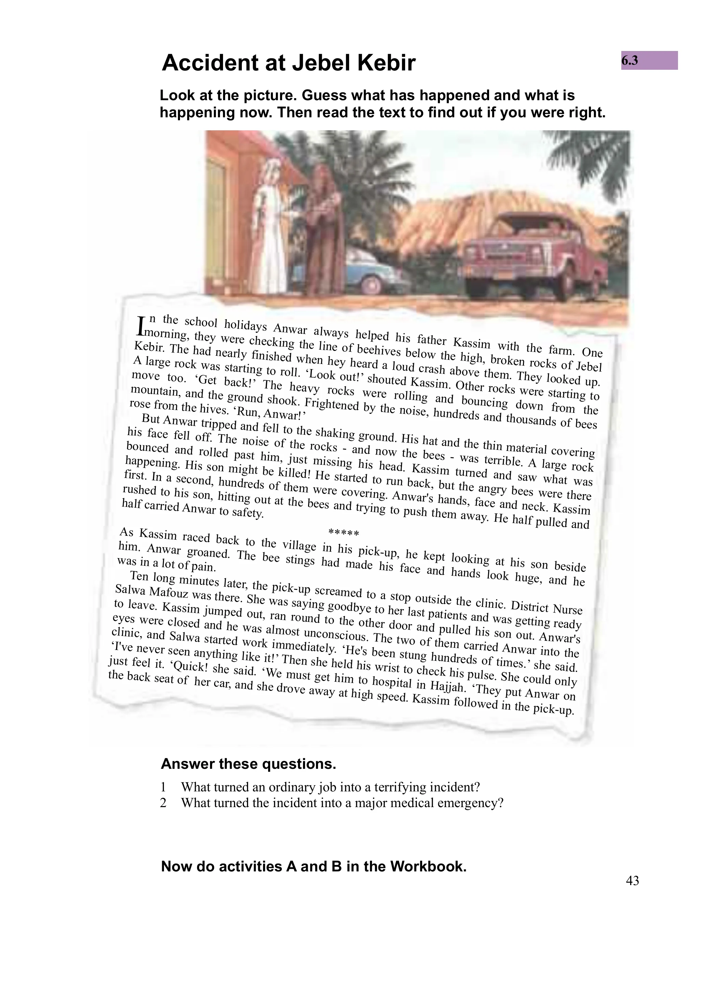

6.3 Accident at Jebel Kebir
Look at the picture. Guess what has happened and what is happening now. Then read the text to find out if you were right.
[Complete illustrated narrative card available offline in assets/ref/pb_p043.webp; structured paragraph anchors below for all PB/WB questions:]
Para 1 (Opening & Rock-fall): In the school holidays Anwar always helped his father Kassim with the farm. One morning, they were checking the line of beehives below the high, broken rocks of Jebel Kebir. Literal printed typo line: "The had nearly finished when hey heard a loud crash above them." Kassim shouted 'Look out!' and 'Get back!'; heavy rolling rocks made the ground shake, frightening hundreds and thousands of bees out of the hives.
Para 2 (Fall & Bee Stings): Anwar tripped on the shaking ground; his hat and protective face cloth fell off. A large rock missed his head, then angry bees swarmed over Anwar's face, hands and neck. Kassim rushed through the swarm hitting out at the bees and half pulled, half carried Anwar to safety.
Para 3 (Drive to the clinic): As Kassim raced back to the village in his pick-up, he kept looking beside him at Anwar's hugely swollen face and hands; Anwar groaned in intense pain.
Para 4 (At the clinic with Nurse Salwa): Ten minutes later the pick-up screamed to a stop outside the clinic where District Nurse Salwa Mafouz was saying goodbye to her last patients. Anwar's eyes were closed and he was almost unconscious ('He's been stung hundreds of times.'). Checking his wrist, Salwa could only just feel his pulse, said they must take him to hospital in Hajjah, put Anwar on her car's back seat and drove at high speed while Kassim followed in his pick-up.
Answer these questions.
1 What turned an ordinary job into a terrifying incident?
2 What turned the incident into a major medical emergency?
Now do activities A and B in the Workbook.The had nearly finished when hey heard (سقوط حرف y من They وسقوط t من they).Fuad (Now bring Fuad back to see me at the clinic next Monday.) بينما في القصة كانت الممرضة تودّع آخر مرضاها (her last patients) قبيل وصول أنور.[
{
"num": 1,
"prompt": "1 moving very quickly up and down, or from side to side ______",
"answers": [
"shaking"
]
},
{
"num": 2,
"prompt": "2 not thinking or moving, often after an injury ______",
"answers": [
"unconscious"
]
},
{
"num": 3,
"prompt": "3 hurt by bees ______",
"answers": [
"stung"
]
},
{
"num": 4,
"prompt": "4 part of the body just above the hand ______",
"answers": [
"wrist"
]
},
{
"num": 5,
"prompt": "5 beating of blood through the body ______",
"answers": [
"pulse"
]
},
{
"num": 6,
"prompt": "6 making a deep sound because of pain ______",
"answers": [
"groaned"
]
},
{
"num": 7,
"prompt": "7 drove very fast ______",
"answers": [
"raced"
]
}
][
{
"num": 1,
"question": "1 He's a good worker. He'll look after the farm well one day.",
"model_answer": "Kassim thought this while he and Anwar were checking the beehives below Jebel Kebir (before the rock-fall).",
"explain_ar": "فكّر الأب قاسم بذلك وهو يراقب حماس ابنه للعمل بالخلايا."
},
{
"num": 2,
"question": "2 Aah! Help! The pain!",
"model_answer": "Anwar thought/cried this when hundreds of bees stung his face, hands and neck (and while groaning in pain in the pick-up).",
"explain_ar": "أنور هو من تألّم وصاح وئَنَّ من شدة اللسعات."
},
{
"num": 3,
"question": "3 Faster! He looks terrible!",
"model_answer": "Kassim thought this as he raced back to the village in his pick-up, looking at Anwar's swollen face and hands beside him.",
"explain_ar": "لاحظ الأب تضخم وجه أنور ويديه وهو يقود مسرعاً للعيادة."
},
{
"num": 4,
"question": "4 Now bring Fuad back to see me at the clinic next Monday.",
"model_answer": "District Nurse Salwa Mafouz said this when she was saying goodbye to her last patient(s) just before leaving the clinic (right before Kassim arrived).",
"explain_ar": "تنويه: ذكرت العبارة اسم Fuad لمريضها الأخير في العيادة (أو بقايا مسودة اسم سابقة)، وقالتها سلوى قبل وصول أنور بلحظات."
},
{
"num": 5,
"question": "5 I'm so glad there's not much wrong with him.",
"model_answer": "District Nurse Salwa Mafouz (or her last clinic patient's parent) thought this while finishing with the last clinic patient before Anwar's emergency arrived.",
"explain_ar": "ارتياح على سلامة المريض الأخير البسيط يمهّد درامياً لوصول حالة أنور الحرجة."
},
{
"num": 6,
"question": "6 What's this? Another patient?",
"model_answer": "District Nurse Salwa Mafouz thought this when Kassim's pick-up screamed to a stop outside the clinic as she was getting ready to leave.",
"explain_ar": "فوجئت الممرضة سلوى بتوقف الشاحنة فجأة وهي تستعد للمغادرة."
},
{
"num": 7,
"question": "7 I mustn't say it, but I think his son is dying.",
"model_answer": "District Nurse Salwa Mafouz thought this when she held Anwar's wrist, could only just feel his pulse, and urged them to rush him to hospital in Hajjah.",
"explain_ar": "تبيّنت سلوى خطورة النبض الضعيف فأمرت بسرعة نقله لمستشفى حجة."
}
]{
"pb_text_vs_image": "طُوبقت PB ص 43 مع pb-45.png: حُفظ خطأ 'The had nearly finished when hey heard' حرفياً وأُرفقت pb_p043.webp للمطالعة الكاملة أوفلاين.",
"wb_ocr_vs_image": "طُوبقت WB ص 73–74 مع wb-074.png وwb-075.png: أزيلت آثار العلامة المائية عن السطر 6.3 A #1 وتأكدت صياغة B #4 ('Fuad')."
}